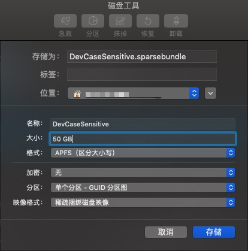

前言
- 欢迎在文末留言，共同进步。
- 本文采用署名 - 非商业性使用 - 相同方式共享 4.0 国际 (CC BY-NC-SA 4.0) 许可协议，转载请注明出处！
起因
macOS 的文件系统不区分大小写，但在开发编码的过程中，可能会下载到需要区分大小写的文件——Git 还可以通过配置控制一下，SVN 中出现这种问题的概率就不小了——因此想要找到一个解决办法。
- 如果将文件系统直接改成区分大小写的，又会有一些软件无法正常使用（譬如 Adobe 家的），所以不想自找麻烦。
- 如果对磁盘进行分区，分出一块空间专门用来开发，格式化为区分大小写的。这就会造成一定程度的磁盘空间浪费（不继续 Windows 的使用习惯了，就是不想分区），总是会很心疼的，毕竟 mac 的磁盘空间很贵。
方案
后来了解到 mac 的稀疏磁盘映像(sparseimage)比较不错
- 对映像文件的操作与
dmg格式相同 - 使用多少空间，其真实占用空间就是那么大，不会造成空间浪费。假设新建一个稀疏磁盘映像，大小为50GB，里面存了5GB的代码，那么这个映像文件实际占用5GB存储空间
- 映像声明的空间不够了，还可以随时扩容。当然前提是你的物理磁盘装得下
- 性能几乎无损
- 需要备份、迁移代码库？零散文件的读写哪有单个文件快呀，直接复制磁盘映像，你的代码库就备份了
嗯，最后决定建一个稀疏磁盘映像，格式化成区分大小写的分区格式，来保存我的代码库
实施
建立磁盘映像
打开磁盘工具，新建空白映像（图1）
- 其中
存储为和位置随意，我这里是~/DevCaseSensitive.sparsebundle - 下面的
名称定义的是分区名称，也就是磁盘的挂载点了 - 大小根据自身情况来填
- 格式我选的是
APFS（区分大小写） - 分区就单个分区就行，选择
GUID 分区图 - 映像格式选择
稀疏捆绑磁盘映像

- 其中
然后就可以把代码都写入这个分区了，我这里的挂载点是
/Volumes/DevCaseSensitive- 如果你有很多项目了，又懒得一个一个去处理，用软连接吧（先学会用，注意数据安全）
- 如果映像空间不够了，可以扩容的
- 关闭所有使用该分区的程序
- 卸载该磁盘映像
- 使用
hdiutil resize -size 50g ~/DevCaseSensitive.sparseimage来修改大小 hdiutil attach ~/DevCaseSensitive.sparseimage重新挂载磁盘映像- 使用命令行或者磁盘工具调整分区大小
开机自动挂载
我在磁盘映像里还放了 IDE 工具（JetBrains 的 IntelliJ IDEA），而 JetBrains Toolbox 会开机自启。又由于 macOS 登录后的各程序启动都是并行的，没有先后顺序，因此不能直接将磁盘映像添加到登录项LaunchDaemons 是在系统启动后就会执行，优先于登录项，因此这里采用这种机制
- 参考文章
- 了解LaunchDaemons
- 利用 Launchd 定制 Mac 启动任务
- Mac OS启动服务优化高级篇（launchd tuning）
- Mac OSX的开机启动配置
- Daemons and Agents
LaunchAgents的目录都是登录项，不能用，/System/Library/LaunchDaemons是系统级的，一般不动，因此目录选择/Library/LaunchDaemons
在/Library/LaunchDaemons下新建文件cn.wdmcheng.sparseimage-loader.plist，内容如下（xxxxx是用户名）1
2
3
4
5
6
7
8
9
10
11
12
13
14
15
16
17
18
19
20
<plist version="1.0">
<dict>
<key>Label</key>
<string>cn.wdmcheng.sparseimage-loader</string>
<key>ProgramArguments</key>
<array>
<string>hdiutil</string>
<string>attach</string>
<string>/Users/xxxxx/DevCaseSensitive.sparseimage</string>
</array>
<key>RunAtLoad</key>
<true/>
<key>StandardErrorPath</key>
<string>/dev/null</string>
<key>StandardOutPath</key>
<string>/dev/null</string>
</dict>
</plist>执行命令
launchctl load /Library/LaunchDaemons/cn.wdmcheng.sparseimage-loader.plist加载配置，重启即可生效
IDE 配置
JetBrains 家的 IDE 需要配置一个属性，来指定使用区分大小写的模式
在 IDE 的 JVM 参数上，增加 -Didea.case.sensitive.fs=true 即可
接下来就可以正常使用啦